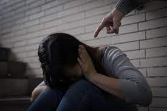
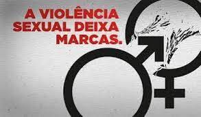
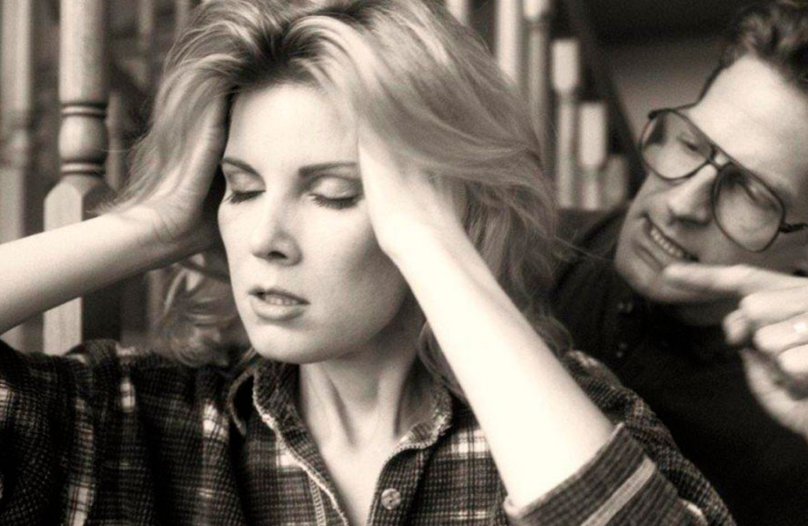
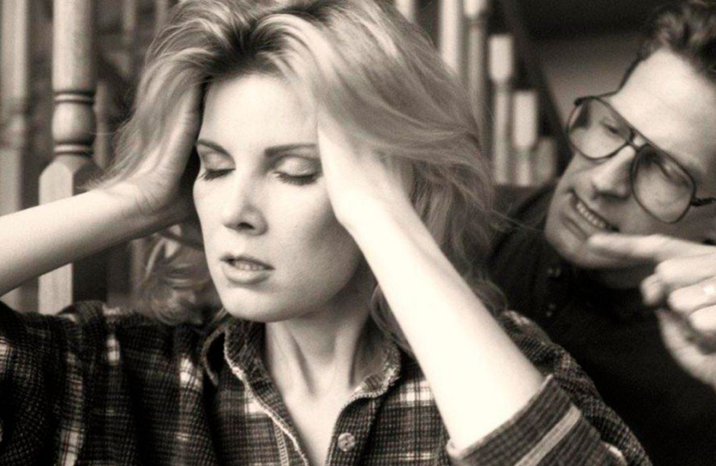
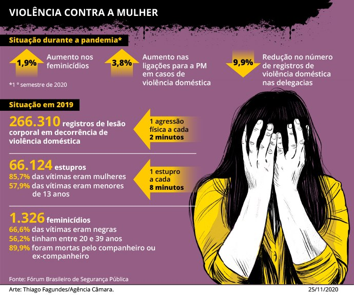
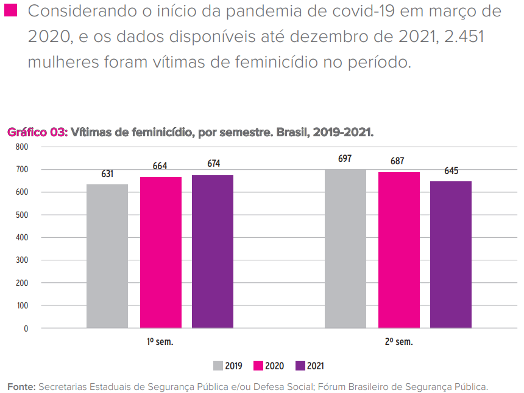

Principais tipos de Violência:
- Violência física: É aquela em que o agressor usa da foça física e machuca a vítima, em muitos casos com uso de armas, exemplos: chutar, queimar, cortar e mutilar a vítima.
- Violência psicológica: É um tipo de violência mais comum, em que o agressor proíbe a mulher de trabalhar, estudar, viajar, falar com amigos, e por consequência causa muitos danos emocionais e diminuição da autoestima da mulher.
- Violência sexual: A violência sexual é qualquer conduta que constranja a mulher a presenciar, a manter ou a participar de relação sexual não desejada, aquela que a mulher é obrigada a se prostituir, a fazer aborto contra a sua vontade, quando a mesma sofre assédio sexual, ameaça e coação ou uso da força e uma série de intimidação a sua sexualidade..
- Violência Patrimonial: É aquela e que a mulher em sofre destruição parcial ou total de objetos pessoais, valores e direitos ou recursos econômicos que incluir direitos que são destinados para as suas necessidades básicas.
- Violência Moral: É aquele tipo de conduta em que o agressor falsamente atribui à mulher fatos que maculem a sua reputação, ou injuria, e pode ofender a dignidade da mulher, podendo ocorrer também pela internet
Violência Física e Violência Psicológica
Violencia Sexual e Violencia Patrimonial
Violencia Moral
.png) 

COMBATE A VIOLÊNCIA CONTRA MULHER
Todos devemos estar consciente de que a violencia contra mulher é um assunto de todos, temos que denunciar e punir os agressores. Estudos recentes mostam que na pandemia a violencia contra as mulheres teve um aumento consideravél, Segundo o Fórum Brasileiro de Segurança Pública(situação em 2019), 1 (UMA) mulher foi agredida a cada 2 (Dois) minutos e 1 (UM) estupro a cada 8 (OITO) minutos.
 Ministério da Saúde: Central de Atendimento a Mulher
Denuncie: Ligue 180